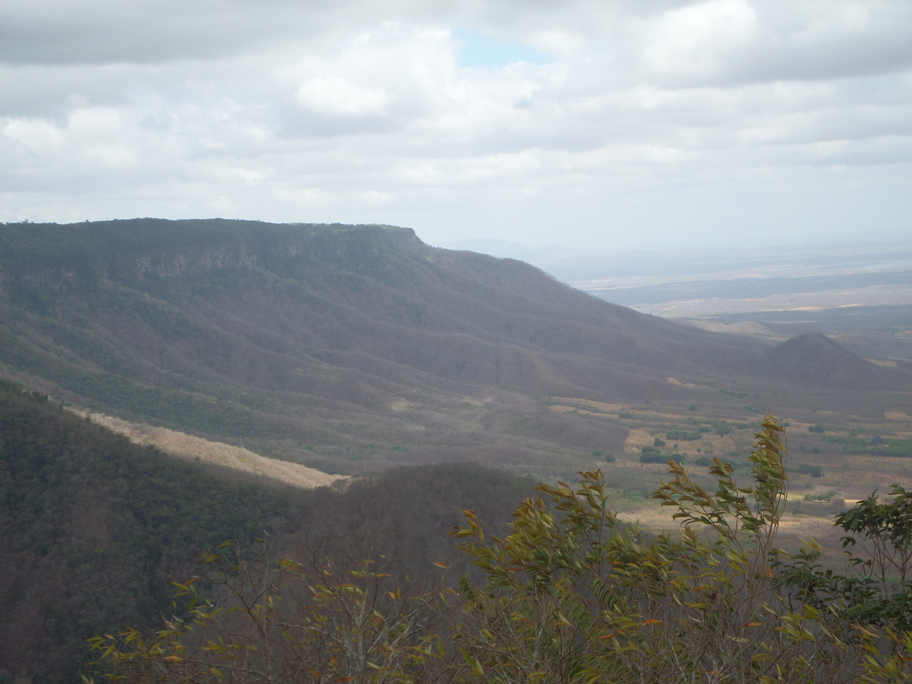
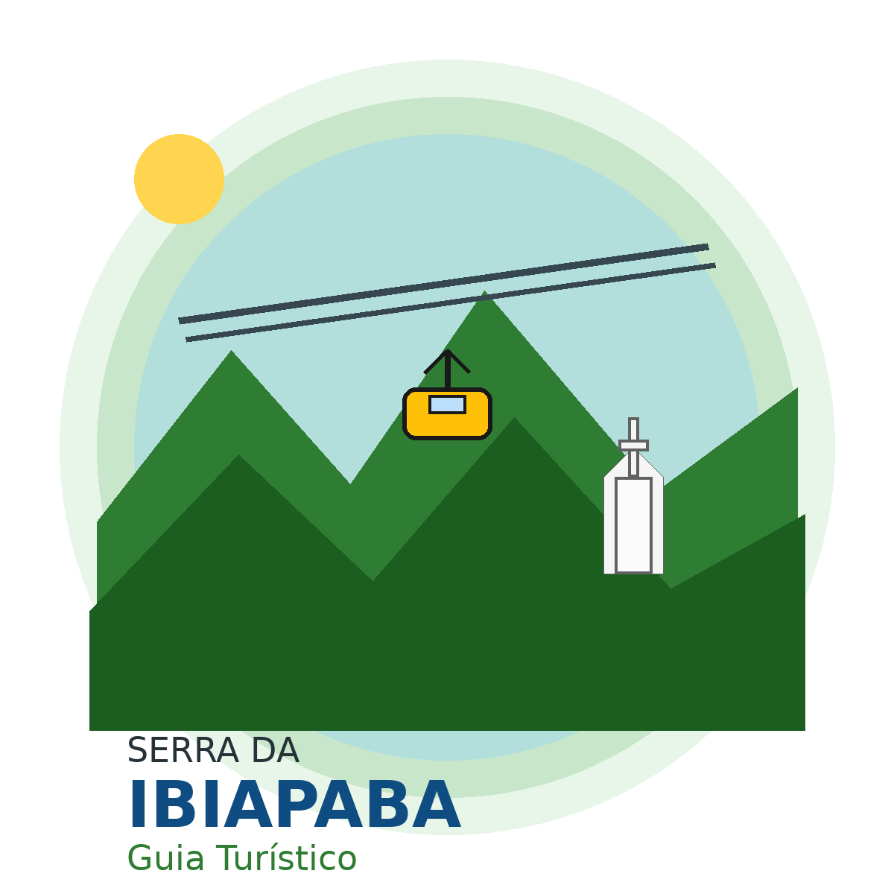
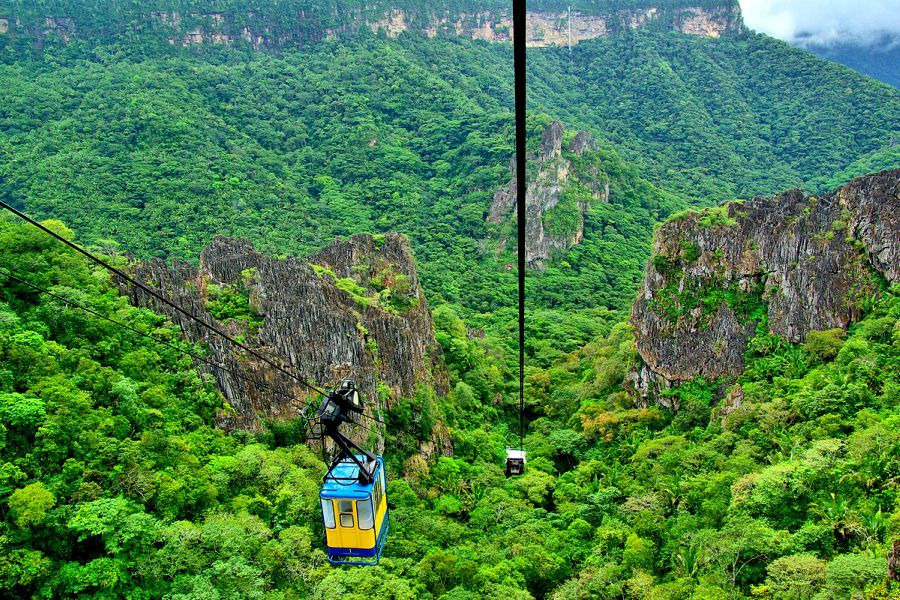
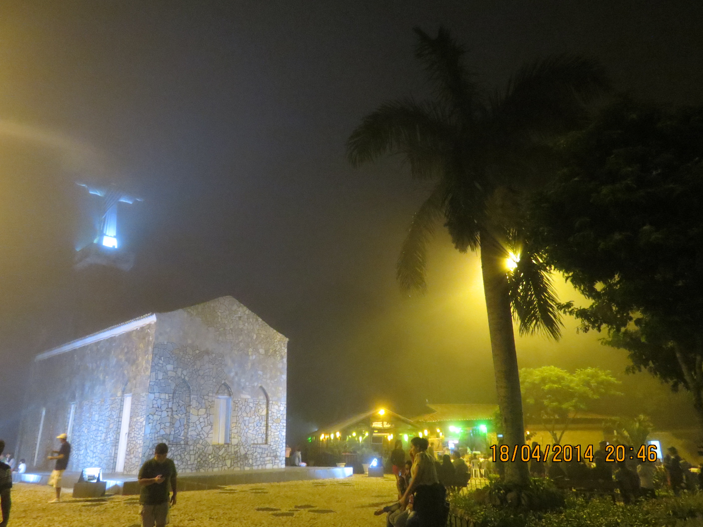
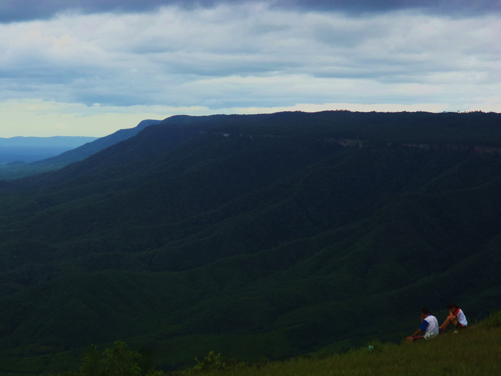

Parque Nacional de Ubajara

Um dos lugares mais conhecidos da Serra da Ibiapaba, com natureza, trilhas e belas paisagens.


Um dos lugares mais conhecidos da Serra da Ibiapaba, com natureza, trilhas e belas paisagens.

Atração turística famosa da região, com vista panorâmica da serra.

Local histórico e turístico muito importante em Viçosa do Ceará.

Tianguá se destaca pelas paisagens serranas e pelo contato com a natureza.